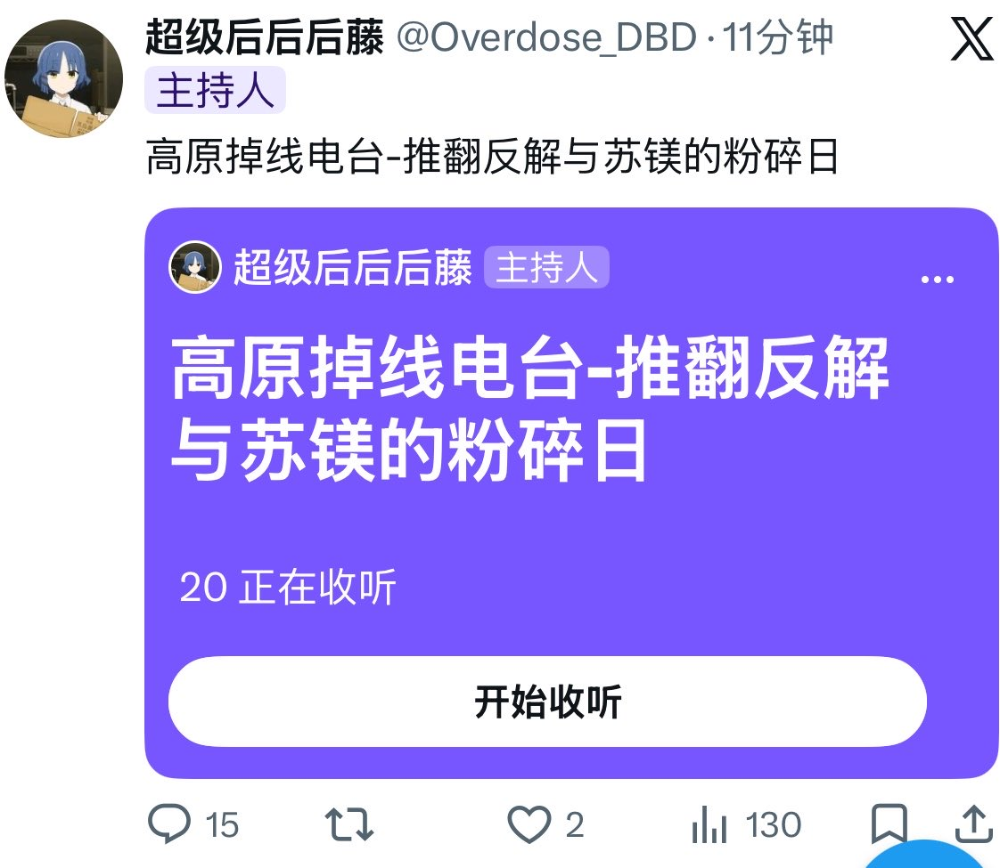

RT @cmqxccc: 承认反解离苏镁的错误也无法抹去你过去的罪行，那么多小白鼠受害者们曾经都听你的胡言乱语服下一堆乱七八糟的药物和原粉,还有那些奇奇怪怪的什么吃特辣辣椒反解离，干嚼茶叶咽下灌水催吐法,od促智药等等，谁知道这些东西对身体会造成什么的影响，你从未对这些小白鼠受…


承认反解离苏镁的错误也无法抹去你过去的罪行，那么多小白鼠受害者们曾经都听你的胡言乱语服下一堆乱七八糟的药物和原粉,还有那些奇奇怪怪的什么吃特辣辣椒反解离，干嚼茶叶咽下灌水催吐法,od促智药等等，谁知道这些东西对身体会造成什么的影响，你从未对这些小白鼠受害者们有过一分歉意，真是虚伪啊。 https://t.co/tttYZulLqt